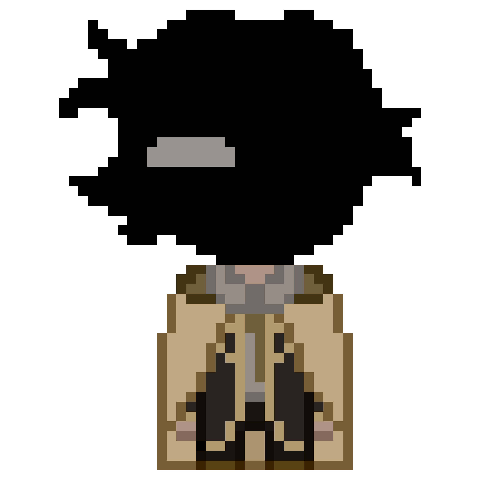
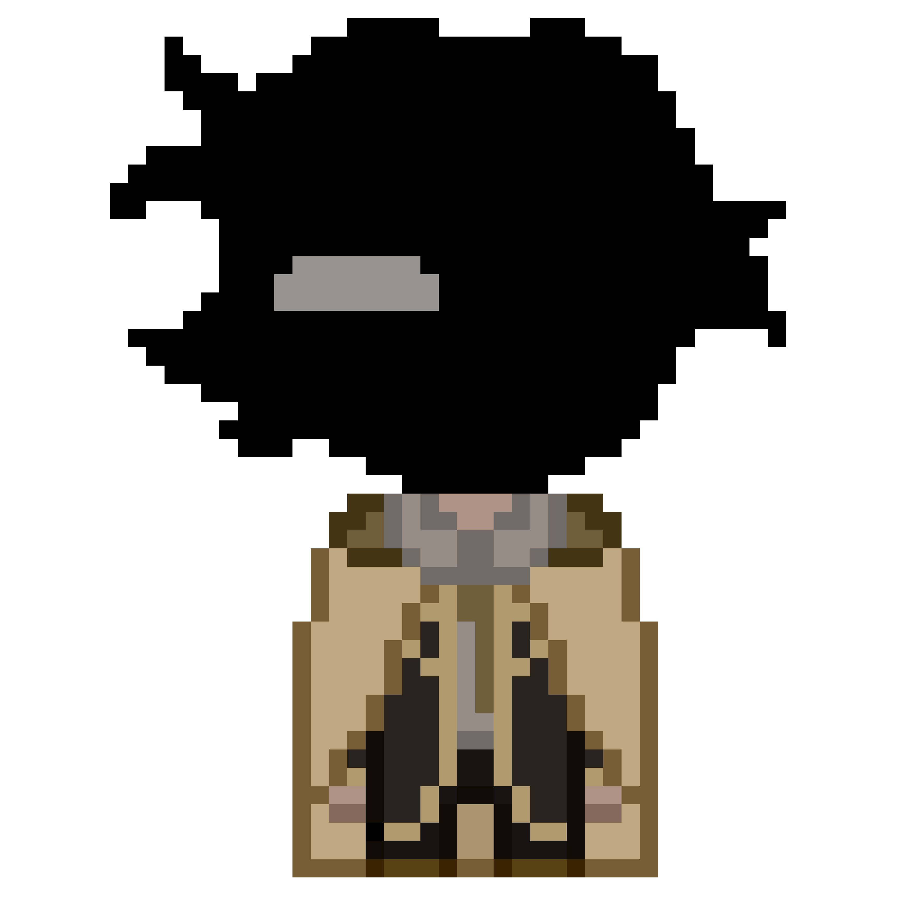
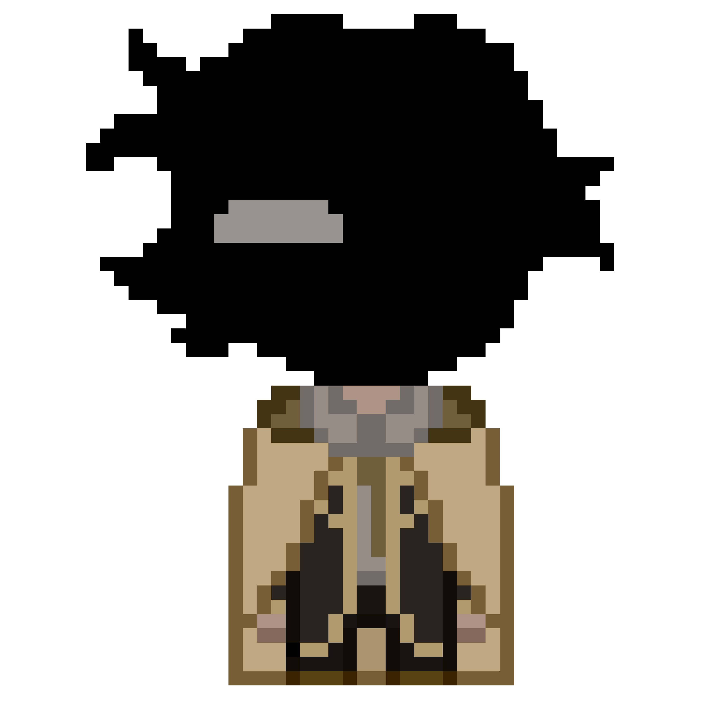

:/[RX_IRIS]/ДЕЛО 1

:/[RX_IRIS]/ДЕЛО 1

|

/
|
:/[RX_IRIS]/ДЕЛО 1

|
/
история :
(для лучшего понимания, легче всего будет разделить биографию на этапы из за того что все события длятся ОЧЕНЬ продолжительное количество времени.)((p.s это очень маленьким шрифтиком))
-никакое постороннее лицо не должно знать о том что он [???], это жестоко присикаемо
-сервер и он связаны. это можно представить как сосуд энергии, который используется на двоих.
-каждой копии в нигде посвящен коридор, а его коридор – это конец самого нигде, куда дойти может только он. коридор позора
-его никнейм исковеркали до "рекс", так как “[rx_iris]” слишком официально, а ирис не индивидуально, что в итоге приелось.
-[rx_iris] коллекционирует в других коридорах предметы, посвященные другим копиям. он незаметно забирает у копий то, что им когда-то принадлежало. зачастую это что-то золотое или блестящее.
-он также является грифоном. на это указывают слегка оперенные уши (которые всегда прижаты к голове), небольшие крылья и хвост-кисточка, а также чудаковатые привычки как любовь к золоту и погреться под солнцем…
- его работа(и личные цели) иногда пересекается с оттями. (https://t.me/harmoshkaigraet/25?single ссылка на слове "оттями") и марисом
-практически слепой.
-он связан с удачей, но предпочитает не говорить об этом
-он ест богов заживо.
-иногда буквально зависает как компьютерная программа
-1 страдает стокгольмским синдромом(к 2)
каждая перепись вселенной(любое исправление ошибки) сопровождается возвращением в момент из прошлого когда он только попадает в нигде, откуда приходится проживать жизнь снова вплоть до момента где он тогда “остановился”
« — ты рассказывал мне столько, но не говорил, почему мне опасно разгуливать по пустоте. юному мне, полному идей, так еще и с таким большим преимуществом по сравнению с другими, было слишком интересно, и это казалось неправильным держать меня взаперти с такими возможностями...
— я и не рассчитывал на то, что ты сможешь такое вытворить. как ни как не было еще ни одного случая, чтобы бога повредили так, что его можно было считать "мертвым". ты первый, и об этом все еще никто не знает из тех, кому бы следовало
— ... »